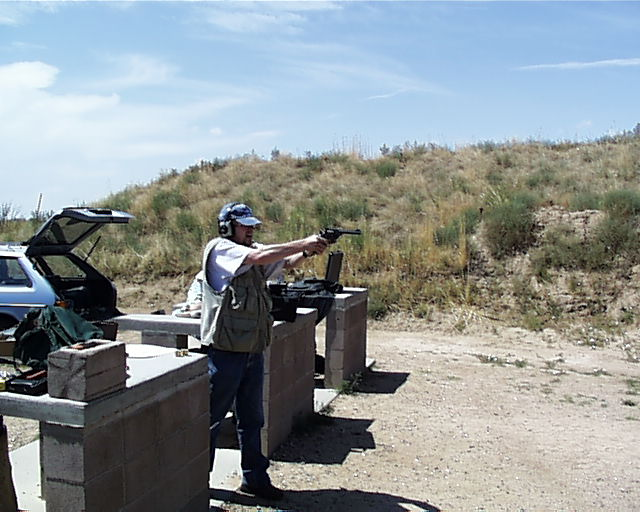

You are here: Webley Page > > A Day at the Range > August 28, 2003, Page 1
A Day at the Range
L. Neil Smith's Blog
August 18, 2003Page 1

Here I am at one of my favorite places in the Known Universe, the High Plains Shooting Range in Weld County, Colorado. It's run by the Weld County Fish and Wildlife Association, for which Cathy and I were both board members a few years ago.
The range is about seven miles east of Ault, Colorado, and about one mile south of the intersection of Colorado 14 and Weld County Road 51. You can probably find it on MapQuest.
This is the westernmost of the facilities, a 25-yard pistol range. That's our old Subaru in the back, presently being used by my brother.
The gun I'm shooting is a Webley Mark VI, originally chambered for .455 Webley. It's been altered to use .45 ACP with moon clips. It belongs to "my other brother Roger", Roger Owen, although it's been in my gun case for about the last four years. I gave it back to him on this day.